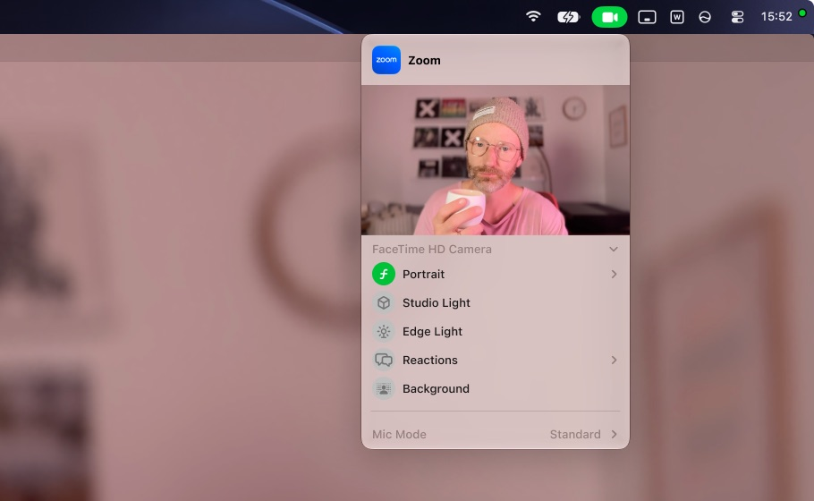
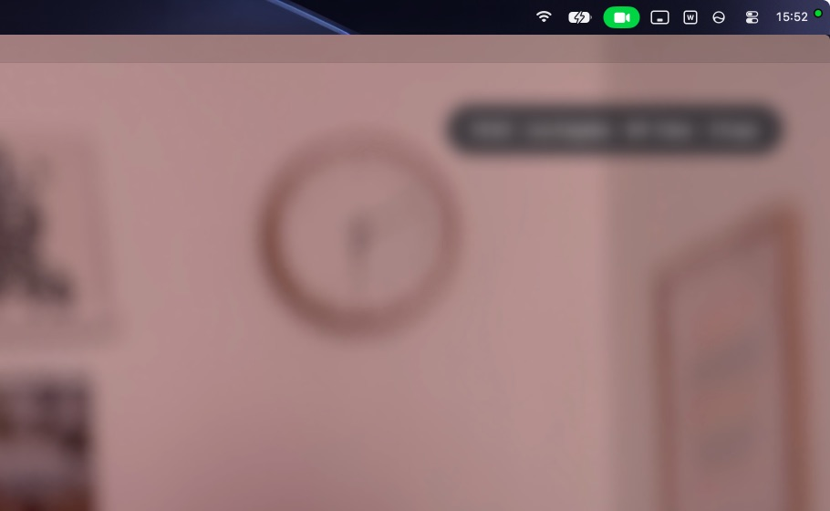
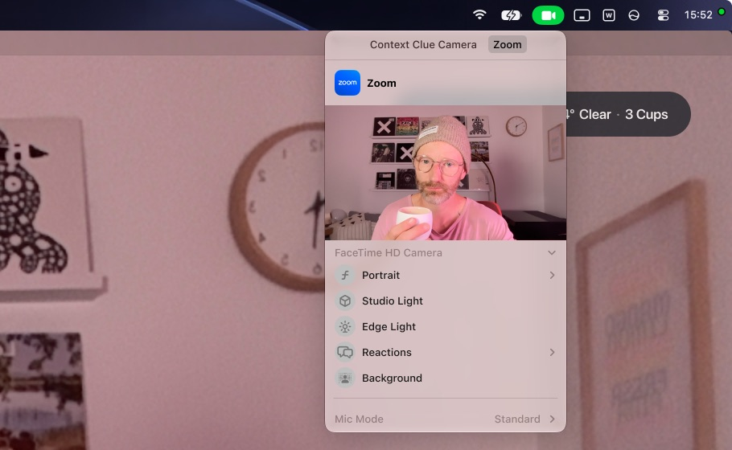
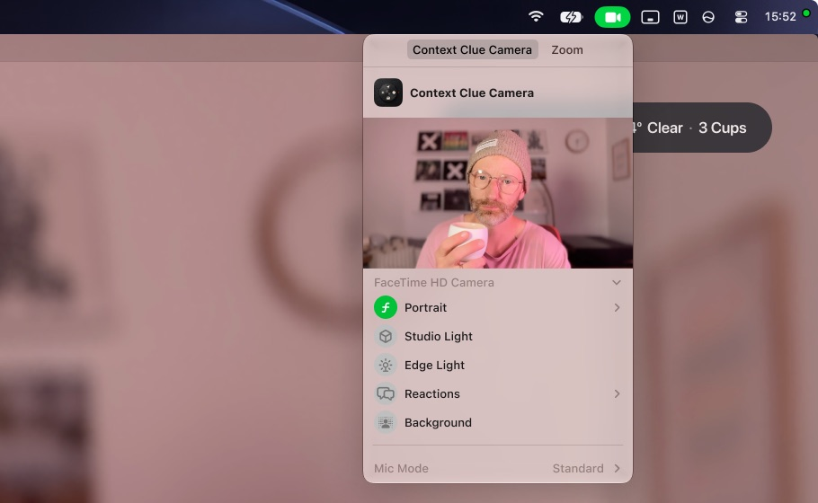

Is your card blurry in your meeting?
If you use Portrait or a background from macOS’s Video Effects, your Context Clue card can end up blurred in Zoom, Google Meet or another meeting app, even though it looks sharp in Context Clue itself. Here’s why, and how to fix it in under a minute.
Why it happens
Video effects belong to an app. Say Portrait is on in Zoom while it uses your Mac’s camera:

Now you switch Zoom to Context Clue. macOS keeps applying Zoom’s Portrait — but now to Context Clue’s picture, card included, so the card gets blurred along with the background.

The confusing part: open Video Effects and there’s a tab for each app, Context Clue Camera and Zoom. For Context Clue Camera, Portrait is off. The effect that’s still running is Zoom’s, so it has to be switched off there.
How to fix it
- Click the green camera icon in the menu bar to open Video Effects.
- Choose the Zoom tab (or your meeting app’s) and turn Portrait or the background off. Your card is sharp again.

- Choose the Context Clue Camera tab and turn Portrait on.

Don’t see Portrait in the Zoom tab? Switch Zoom back to your Mac’s camera in its video settings, turn Portrait off in Video Effects, then switch Zoom back to Context Clue and carry on with step 3.
Your background is blurred and your card stays sharp.
You only need to do this once per app. It comes back only if you turn an effect on in your meeting app’s own tab again.
Still stuck? Write to contextclue at timo dot is.
← Help